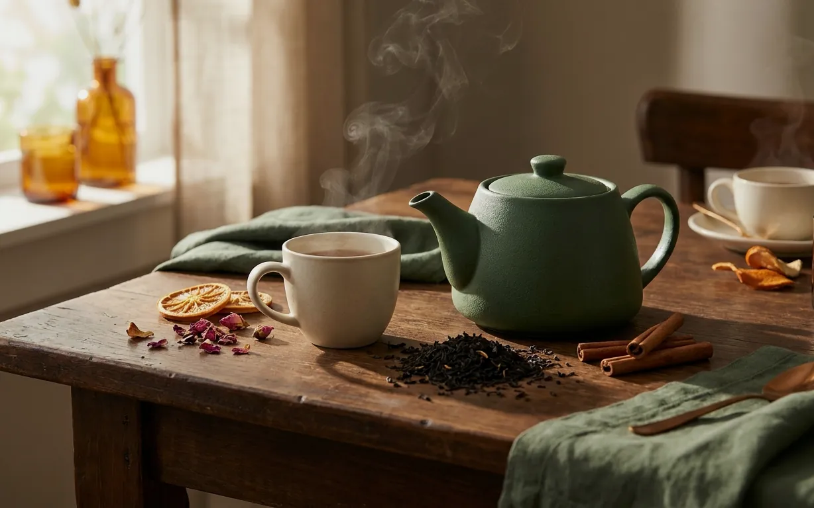
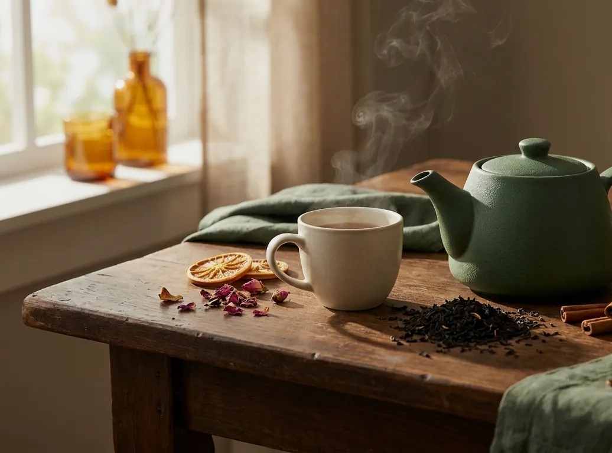
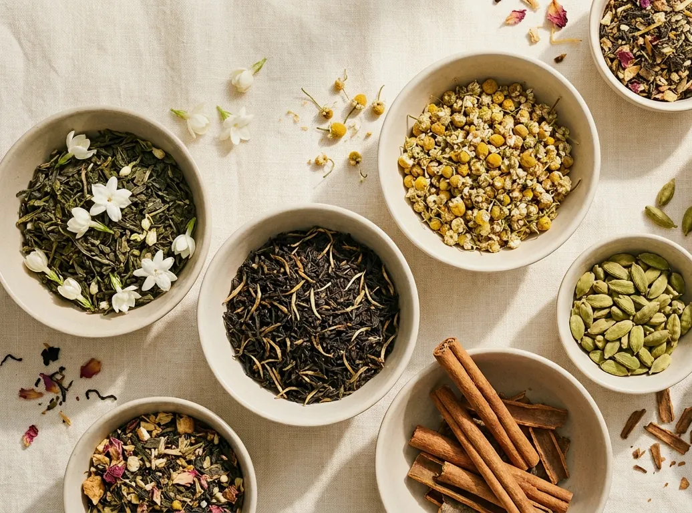
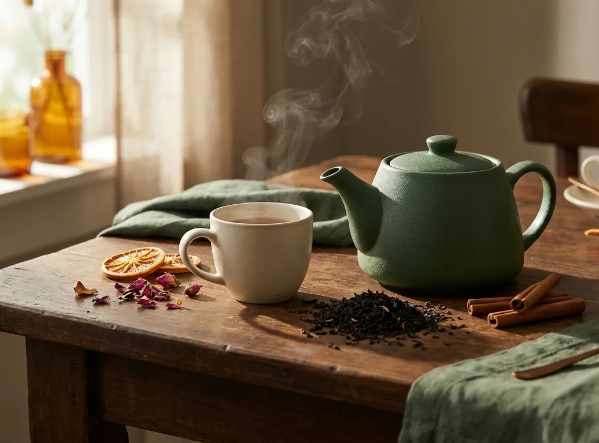
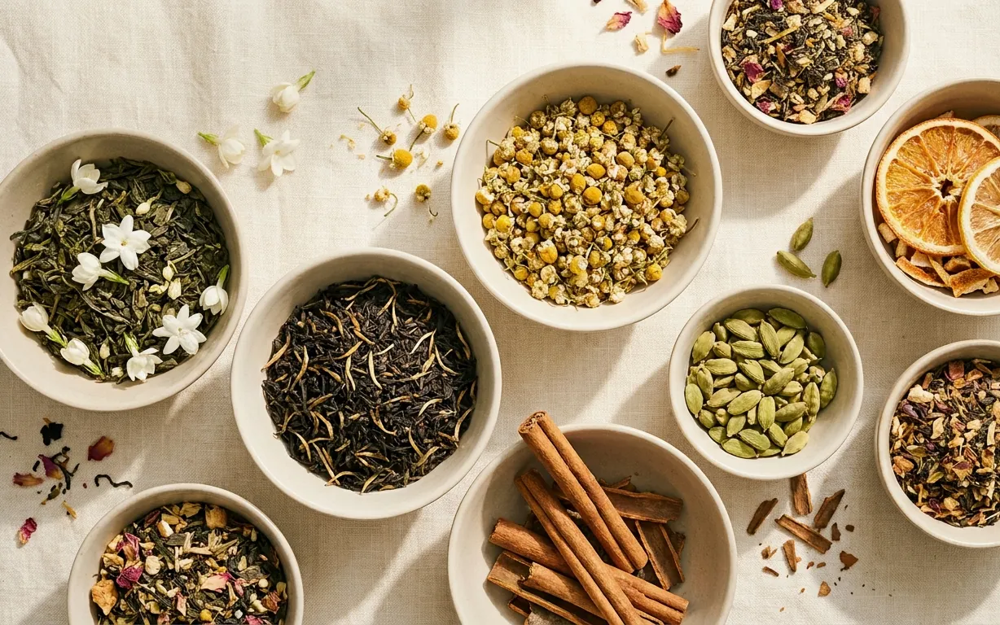
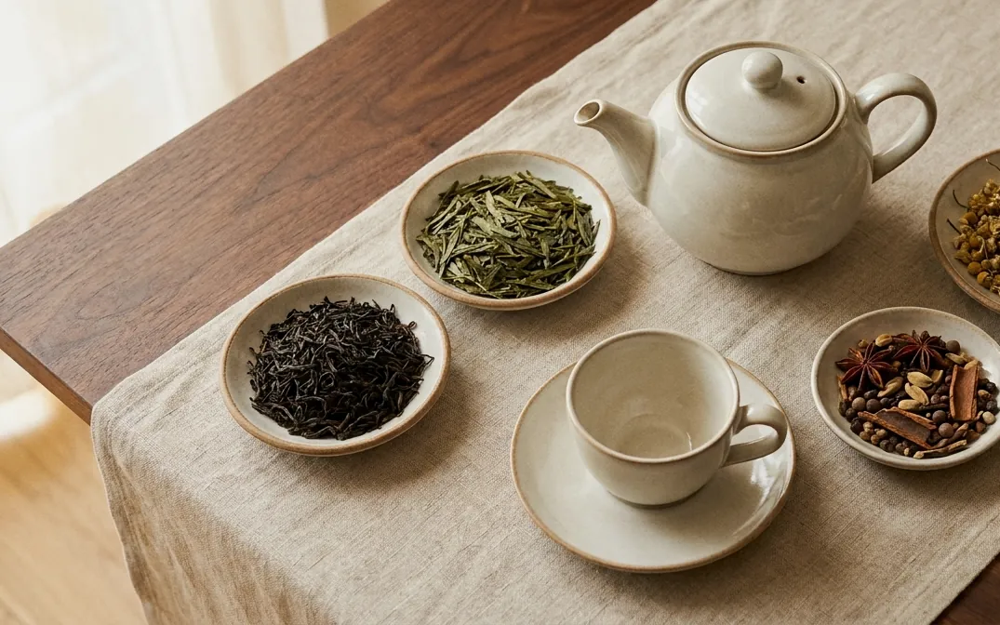
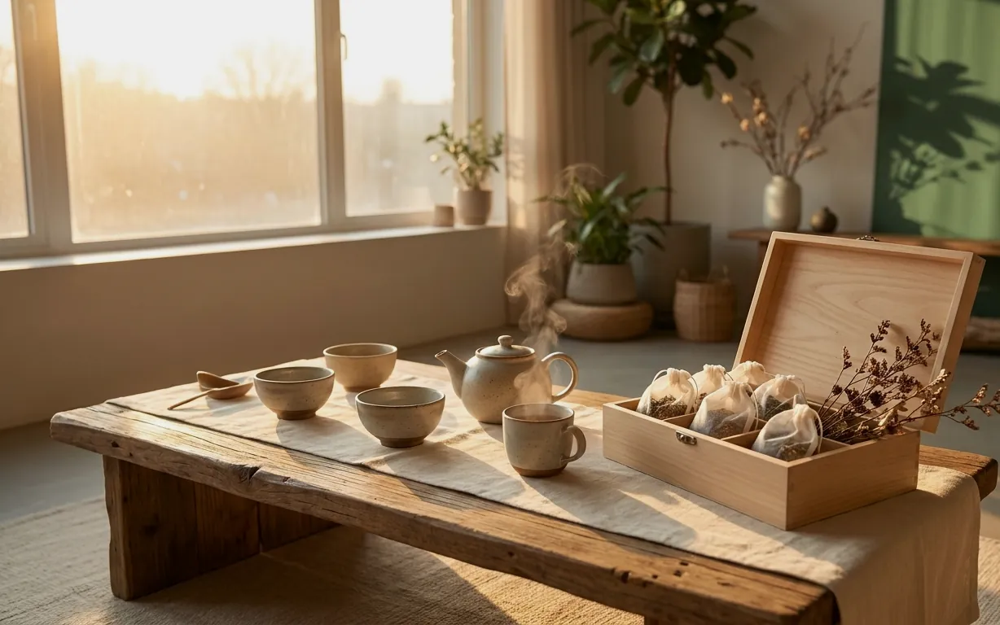

01 / BLACK
Morning Assam
Rich · Malty · Bold

Explore carefully selected loose-leaf teas and aromatic blends crafted for quiet mornings, mindful afternoons and peaceful evenings.
Four expressive cups, each composed for a different rhythm.

Rich · Malty · Bold
Floral · Fresh · Delicate

Soft · Botanical · Soothing
Warm · Aromatic · Spiced

Full-bodied leaves with layered malt, fruit and warming character.

Whole leaves invite attention: their shape, fragrance, texture and the way they open in water. Origin, freshness and brewing choices all shape the cup.

THE ESSENTIAL GUIDE
Discover beautiful loose-leaf teas, learn the ritual and find a blend that fits your everyday moments.
Thanks — your enquiry has been prepared for the Mist & Leaf team.